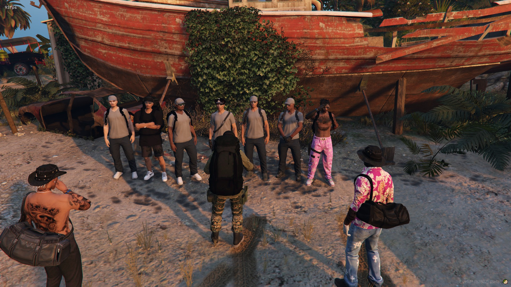

Contrôle des entreprises, lutte contre le travail clandestin et protection des droits des travailleurs à Cayo Perico.
La Brigade Terrestre Immigration est une nouvelle et innovante branche de l'unité terrestre de l'armée, spécialement créée pour contrôler les entreprises de Cayo Perico et lutter efficacement contre le travail clandestin.
En plus de ses fonctions de surveillance et d'intervention, la brigade joue un rôle crucial dans la régulation des activités économiques locales, assurant que les entreprises opèrent en conformité avec les lois en vigueur.
Par son action rigoureuse et déterminée, la Brigade contribue significativement à augmenter le chiffre d'affaires de l'état civil, en réduisant les pertes fiscales dues au travail illégal.

Trois axes d'action complémentaires qui définissent le mandat de la Brigade Terrestre Immigration.
Inspecter régulièrement les entreprises de Cayo Perico pour vérifier la légalité de l'emploi de leurs travailleurs. Identifier les travailleurs clandestins et prendre les mesures appropriées.
Assurer que toutes les entreprises respectent les obligations fiscales et contribuent équitablement aux revenus de la République. Augmenter les sources de revenu de la République.
Garantir que tous les travailleurs, y compris les plus vulnérables, sont traités conformément aux lois. Faciliter l'accès à des conditions de travail sûres et équitables.
Cliquez sur chaque étape pour afficher son détail. Suivez scrupuleusement l'ordre pour garantir une intervention efficace et organisée.
Lancez le chronomètre dès que vous stoppez les travailleurs (étape 3). Arrêtez-le au retour sur le champ (étape 9) pour communiquer la durée aux chefs de travail.
Cochez chaque point au fur et à mesure de l'intervention pour ne rien oublier.
0 / 11 points validés
Vue d'ensemble du déroulement d'une opération de contrôle de bout en bout.